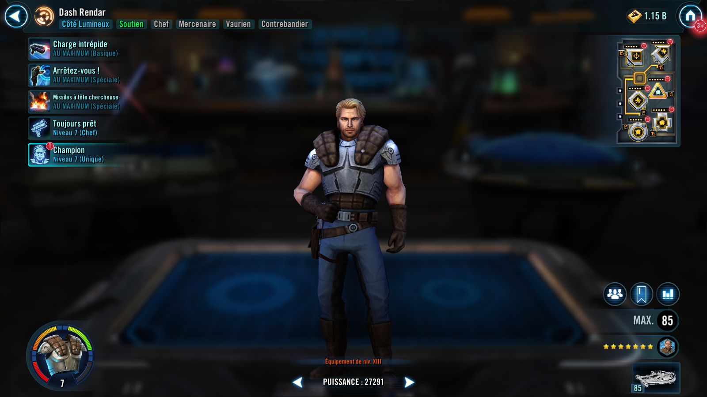
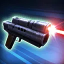
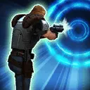

Dash Rendar
Charismatic Scoundrel Leader who gives Scoundrel allies Prepared
Charismatic Scoundrel Leader who gives Scoundrel allies Prepared


Deal Physical damage 3 times to target enemy. For each critical hit, call another random Prepared ally to assist, dealing 75% less damage (limit once per ally).

Deal Physical damage to target enemy and dispel all buffs on them. Then, Stun them for 1 turn. This attack deals 20% more damage for each buff dispelled.
Deal Physical damage 3 times to all enemies. The first instance of damage dispels Stealth and Dazes for 2 turns, the second instance of damage inflicts Defense Down for 2 turns, and the third instance of damage inflicts Critical Damage Down for 2 turns. This attack can't be evaded or resisted.
Scoundrel allies enter the battle Prepared, and Prepared allies gain an additional bonus based on their Role, doubled for Light Side Scoundrels. Whenever a Scoundrel ally gains Prepared, they gain Critical Damage Up and Offense Up for 1 turn.
Attacker: +15% Critical Damage
Tank: +15% Max Health
Support or Healer: 10% Potency and +10 Speed
Omicron Boost : While in Grand Arenas: If an ally loses Prepared, they gain Prepared.
Scoundrel allies gain 20% Max Health, 20% Potency, and 20% Offense. Whenever a Prepared ally scores a critical hit, all Prepared allies gain 2% Turn Meter.